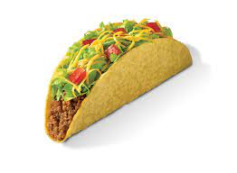

Home
Taco Recipe

Crunchy and Delicious Tacos
My favorite taco! So simple and easy to mix and match any
ingredients. Personally I like the works with as much crammed in as possible!
One tip is while using a crunchy taco, place a soft taco on the plate to
catch anything falling out the back. Then you get a soft taco after you are finished
with the crunchy!
Ingredients
- Hard Taco Shells
- Ground Beef
- Tomatos
- Sour Cream
- Lettuce
- Cheese
Instructions
- Cook the ground beef until brown
- Take the shells and fill them up!
- It really is that easy! Enjoy!